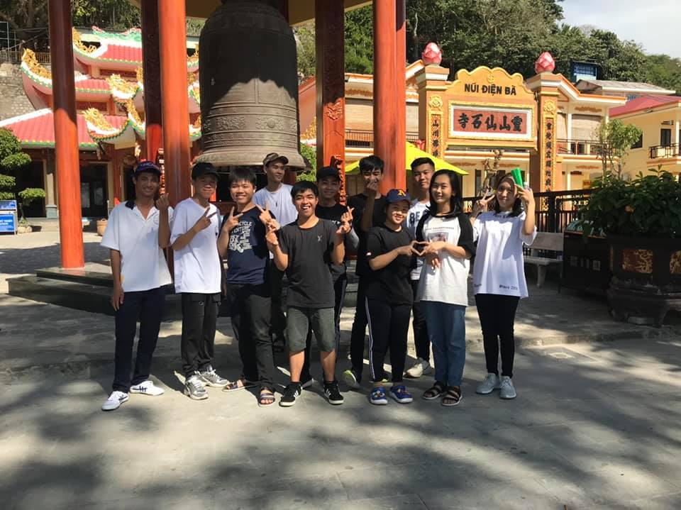
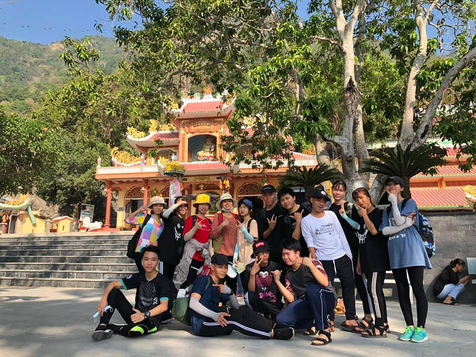
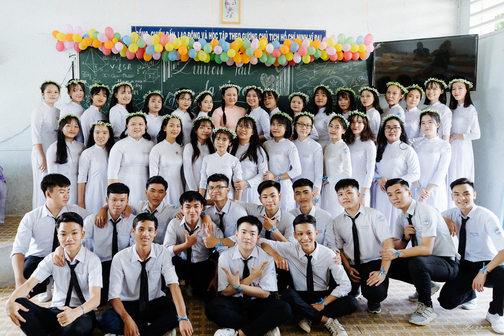

Memories of climbing Ba Den Mountain for the first time
Date: 13/12/2019

When I think about my first time climbing Mount Ba Den, I can't help but remember the extreme excitement and anxiety I experienced. It was a completely new adventure for me and my fellow companions. Starting at the base of the mountain, we had to overcome steep slopes, climb over challenging rock formations, and face the unpredictable weather. The first steps onto the summit brought a profound sense of accomplishment and pride. I recall that as we stood at the peak, before us lay a breathtaking landscape with vast expanses of clouds, and a feeling of limitless freedom. It was truly a memorable experience that opened a new door to exploration and adventure in my life.
Celebrating the second time climbing a mountain with the class. The feeling is still the same as the first time
Data: 20/01/2020

"When I set foot on the summit of the mountain for the second time, the emotions remained just as they were the first time. The vast expanse before me awakened a sense of exhilaration and wonder. It has been two years since our first camping trip here and the beginning of our exploration of this mountainous region. Every step up the steep, rocky path is a cherished memory, from new discoveries and cheerful conversations to challenges and collective efforts. These moments have created priceless memories, and on that second occasion, I still felt the elation and camaraderie that the rocky mountain brings to us, as a heartfelt expression of gratitude for friendship and the marvels of nature."
Memories of taking the yearbook of the high school class
Publicado: 05/08/2020

When I reminisce about our third-grade class yearbook photo, I can't help but smile and feel nostalgic. On that day, the sun was shining brightly, and we were all dressed in our finest attire. My classmates and I struck poses, held hands, and laughed in front of the camera. It was a moment when we all felt that life was beautiful and worth experiencing. Those laughs, those smiles, and those memories are etched deep in my heart, creating unforgettable moments that will last a lifetime. It was undoubtedly a cherished memory from our early school days.